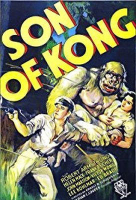
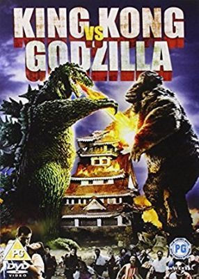
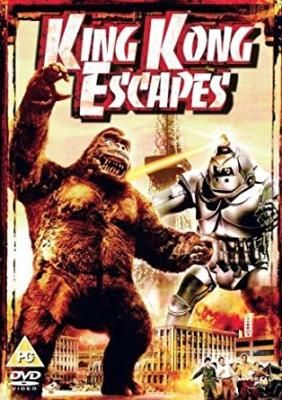
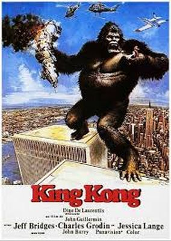
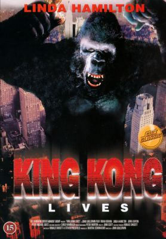
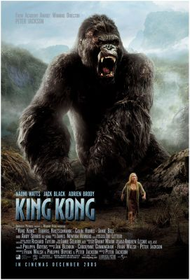
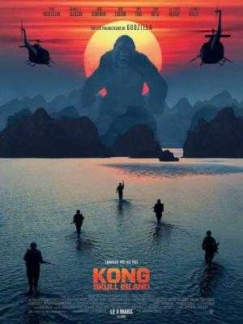
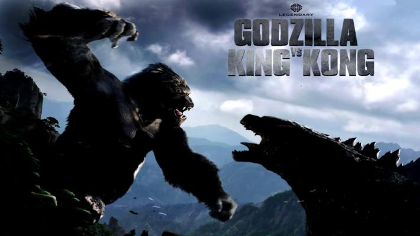

King Kong is a giant movie monster, resembling a giant gorilla that has appeared in various media since 1933. The character first appeared in the 1933 film King Kong from RKO Pictures, which received universal acclaim upon its initial release and re-releases.
  
A sequel quickly followed that same year with The Son of Kong, featuring Little Kong. In the 1960s, Toho produced King Kong vs. Godzilla (1962), pitting a much larger Kong against Toho's own Godzilla, and King Kong Escapes (1967), based on The King Kong Show (1966–1969) from Rankin/Bass Productions. In 1976, Dino De Laurentiis produced a modern remake of the original film directed by John Guillermin. A sequel, King Kong Lives, followed a decade later featuring a Lady Kong. Another remake of the original, this time set in 1933, was released in 2005 from filmmaker Peter Jackson.
  
The most recent film, Kong: Skull Island (2017), set in 1973, is part of Legendary Entertainment's MonsterVerse, which began with Legendary's reboot of Godzilla in 2014. A crossover sequel, Godzilla vs. Kong, once again pitting the characters against one another, is currently planned for 2020.
 
The character King Kong has become one of the world's most famous movie icons, having inspired countless sequels, remakes, spin-offs, imitators, parodies, cartoons, books, comics, video games, theme park rides, and a stage play. His role in the different narratives varies, ranging from a rampaging monster to a tragic antihero.
The King Kong character was conceived and created by American filmmaker Merian C. Cooper. In the original film, the character's name is Kong, a name given to him by the inhabitants of "Skull Island" in the Indian Ocean, where Kong lives along with other oversized animals such as a plesiosaur, pterosaurs and various dinosaurs. An American film crew, led by Carl Denham, captures Kong and takes him to New York City to be exhibited as the "Eighth Wonder of the World".
Kong escapes and climbs the Empire State Building, only to fall from the skyscraper after being attacked by airplanes with guns. Denham comments "It was beauty killed the beast.", for he climbs the building in the first place only in an attempt to protect Ann Darrow, an actress originally offered up to Kong on Skull Island as a sacrifice (in the 1976 remake, her character is named "Dwan").
A documentary about Skull Island that appears on the DVD for the 2005 remake (originally seen on the Sci-Fi Channel at the time of its theatrical release) gives Kong's scientific name as "Megaprimatus kong" ("Megaprimatus" means "big primate") and states that his species may be related to Gigantopithecus, though that genus of giant ape is more closely related to orangutans than to gorillas.
Comics: